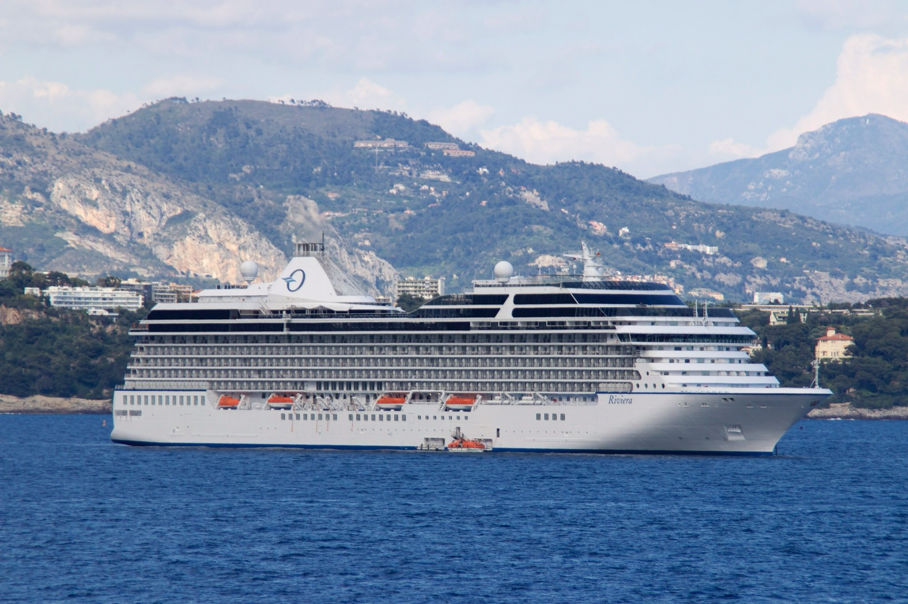

Mark Elster
Introduction
Historic Reflections & The Wonders of Spring

As wonderful as the ship was (and it really was—more on that later) the introduction to Europe was the centerpiece of the trip and truly an experience of a lifetime. Join me as I recount the saga of our Historic Reflections, Wonders of Spring Mediterranean cruise, broken out into days, and in some cases individual excursions…
In some aspects specific to our personal experiences, and in others, of general interest to anyone traveling to Europe via a luxury cruise ship…
In some aspects specific to our personal experiences, and in others, of general interest to anyone traveling to Europe via a luxury cruise ship…
It all began…

During a brief break in my busy workday in January when I attempted to plan, schedule and book a vacation to Washington DC. In spite of modern online booking tools, there were so many options to consider that it was clear I wasn’t going to get it done. It might take days to figure out because a side trip to see the in–laws introduced too many permutations. As I was tearing what little hair I have left out in frustration at how hard this simple task was proving — an incoming email gripped my attention:

HISTORIC REFLECTIONS
Wonders of Spring
Barcelona to Athens Luxury Cruise
APRIL 20 – May 1, 2014 • From $3,499 per person
double occupancy (Including airfare, food and wine)
Wonders of Spring
Barcelona to Athens Luxury Cruise
APRIL 20 – May 1, 2014 • From $3,499 per person
double occupancy (Including airfare, food and wine)


The amenities throughout were incredible.

Bon Voyage!

Onboard meals together, and with our renewed friends, Bobbie and Fred Becker,
ship entertainers (magician and assistant), were each memorable.
ship entertainers (magician and assistant), were each memorable.




The entire trip planned, scheduled and booked by the pros at GoNext and UWAA (University of Washington Alumni Association) on the Oceania cruise line’s fabulous Riviera — the epitome of luxury!
I dropped what I was doing immediately, impulsively deciding in that moment, we’re finally going to Europe! When I called to inform a skeptical NancyEllen, after realizing I was serious, she squealed with delight. Even more amazing to us, a few minutes later I successfully recruited my parents, Clark and Dorene, and our grown sons, Christoff and Gavin!
In the time it took for us to confirm vacation schedules and funding, the entry level cabins (and associated costs) we’d planned for — balcony suites for us and parents, steerage for the guys — booked up, as well as two intermediate higher levels. We all had to upgrade to three adjacent upper level luxury stateroom suites with full verandas! First cabin indeed!
I dropped what I was doing immediately, impulsively deciding in that moment, we’re finally going to Europe! When I called to inform a skeptical NancyEllen, after realizing I was serious, she squealed with delight. Even more amazing to us, a few minutes later I successfully recruited my parents, Clark and Dorene, and our grown sons, Christoff and Gavin!
In the time it took for us to confirm vacation schedules and funding, the entry level cabins (and associated costs) we’d planned for — balcony suites for us and parents, steerage for the guys — booked up, as well as two intermediate higher levels. We all had to upgrade to three adjacent upper level luxury stateroom suites with full verandas! First cabin indeed!